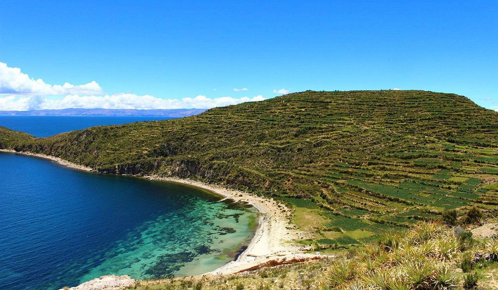
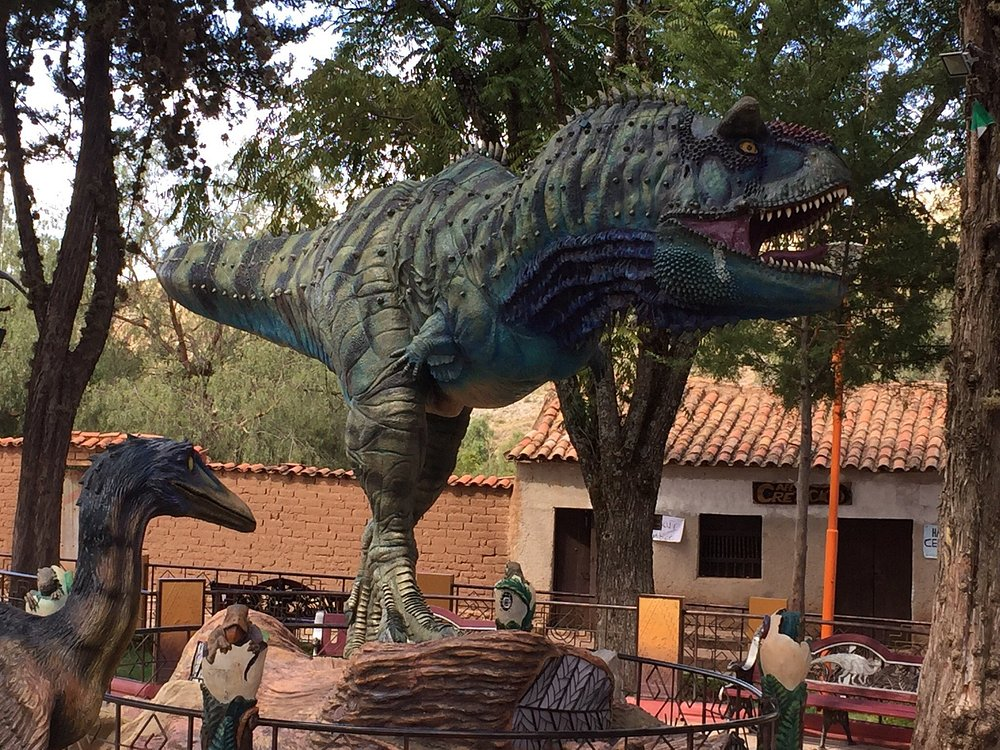
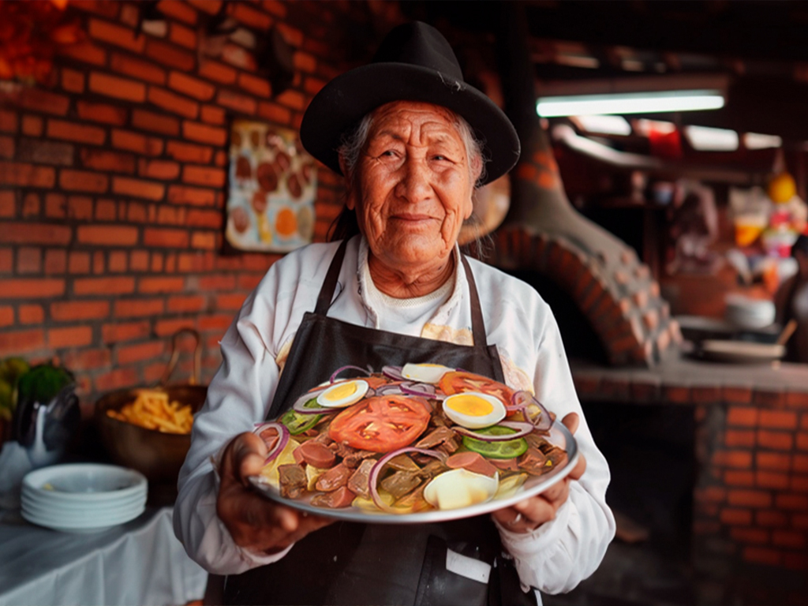
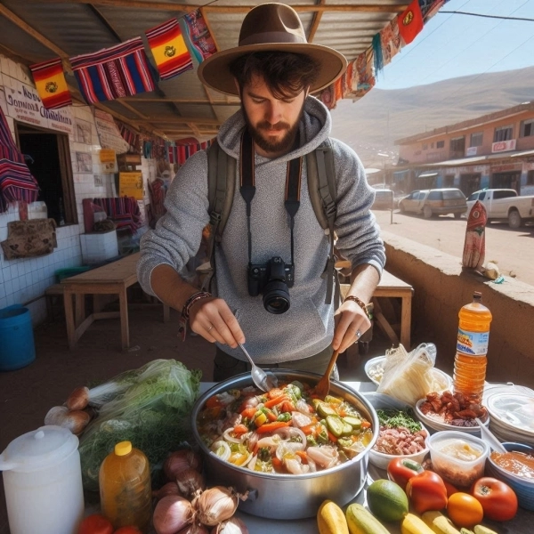
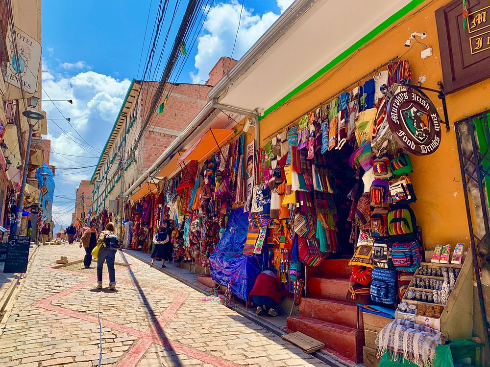

Visita los lugares mas hermosos
Entre montañas, valles y selva tropical el departamento de La Paz muestra al viajero diversos destinos turísticos Lago Titicaca, el cual es el más alto del planeta donde se puede disfrutar el turismo de naturaleza, el turismo religioso y el turismo comunitario a través de la cultura viva de la región. Coroico y los Yungas, donde se puede hacer deportes extremos como biking en la ruta de la muerte, rafting, zipline, caminatas en rutas prehispánicas y entretenerse en las cascadas de Coroico así como las culturas afro bolivianas de Tocaña, Chicaloma y otras comunidades de esta región. Cordillera Real, escalar diversos nevados de la imponente Cordillera de los Andes como el Huayna Potosí, Tuni Condoriri, Illampu, y el desafiante Illimani, donde solo los más avezados aventureros llegan a la cima. Nuestra Señora de La Paz, la ciudad maravilla catalogada de esa forma a nivel mundial, la capital política de Bolivia abre los brazos a todos aquellos que llegan a sus calles, mostrando su cultura mestiza, sus fiestas patronales, su red de teleféricos, los miradores como Killi Killi y el Valle de Luna entre otros.



Degusta de la mejor gastronomia local
Entre montañas, valles y selva tropical el departamento de La Paz muestra al viajero diversos destinos turísticos Lago Titicaca, el cual es el más alto del planeta donde se puede disfrutar el turismo de naturaleza, el turismo religioso y el turismo comunitario a través de la cultura viva de la región. Coroico y los Yungas, donde se puede hacer deportes extremos como biking en la ruta de la muerte, rafting, zipline, caminatas en rutas prehispánicas y entretenerse en las cascadas de Coroico así como las culturas afro bolivianas de Tocaña, Chicaloma y otras comunidades de esta región. Cordillera Real, escalar diversos nevados de la imponente Cordillera de los Andes como el Huayna Potosí, Tuni Condoriri, Illampu, y el desafiante Illimani, donde solo los más avezados aventureros llegan a la cima. Nuestra Señora de La Paz, la ciudad maravilla catalogada de esa forma a nivel mundial, la capital política de Bolivia abre los brazos a todos aquellos que llegan a sus calles, mostrando su cultura mestiza, sus fiestas patronales, su red de teleféricos, los miradores como Killi Killi y el Valle de Luna entre otros.


